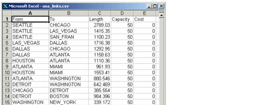

Importing and Exporting Data > Data File Formats > OTS Link Data Files
OTS Link Data Files
OTS link data files use the format shown in Figure 5-7-Link Data File in .csv Format . The first row contains five headers; each subsequent row describes one link.
A data file can define two or more links between the same two nodes. This creates parallel links between the nodes. Parallel links can have different length, capacity, and cost values.
If the imported data includes nodes that are not currently part of your network, SP Guru Transport Planner creates them. You can use this operation to import links and nodes into your network. Because the data file does not include node locations, SP Guru Transport Planner places the nodes at arbitrary locations in the network.
Figure 5-7 Link Data File in .csv Format

| Home © 1987-2007 OPNET Technologies, Inc. All Rights Reserved. This software may be covered by one or more U.S. Patents. See complete patent notice in the Legal Notices section. OPNET Support Center |